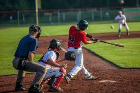

EUA

Brasil
Tão antigo quanto o homem, os esportes são uma das invenções mais benéficas do homem. Além de manter o corpo saudável, ainda auxiliam na criação de uma série de comportamentos positivos, como a humildade, a união, a empatia, dentre outros.
E os esportes com bola são, sem nenhuma dúvida, os mais populares. Mas você sabe a diferença entre alguns deles? É justamente isso que iremos descobrir abaixo.
| Esporte | Origem | Ambiente | Objetivo | Equipe | ||
| 1 |  | Baseboll | 1971, EUA |
campo com 1/4 de círculo, de 92 a 108,2m de raio. | Realizar o maior número de corridas. | Novos jogadores em cada time. | 2 |
| Beach Soccer | 1930, Brasil |
Quadra de areia com 35 ou 37m x 26 ou 27 de largura. | Realizar gols no campo adversário. | Cinco jogadores por time |
| 3 |